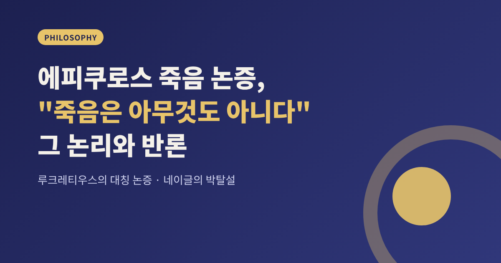
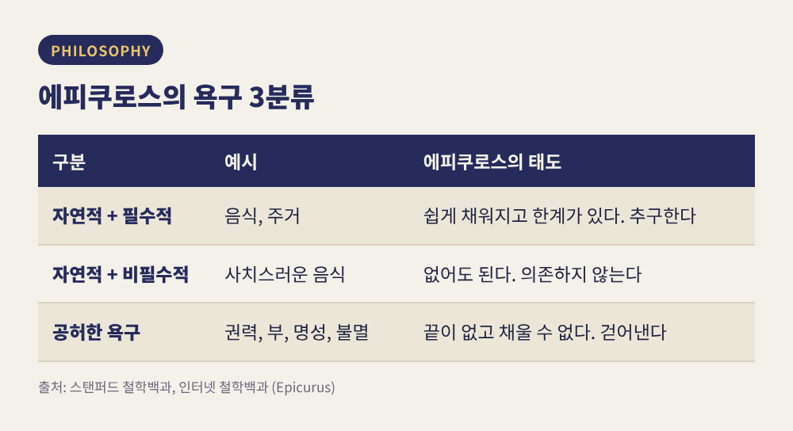
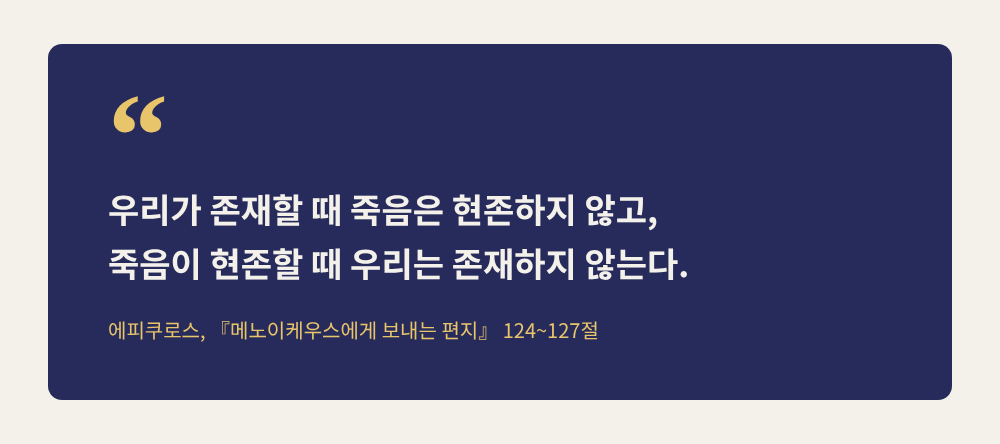
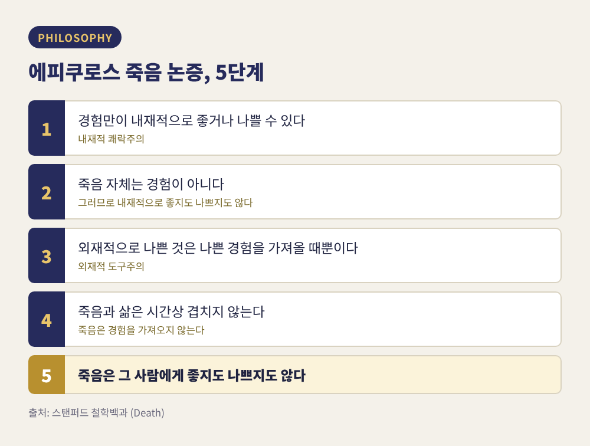
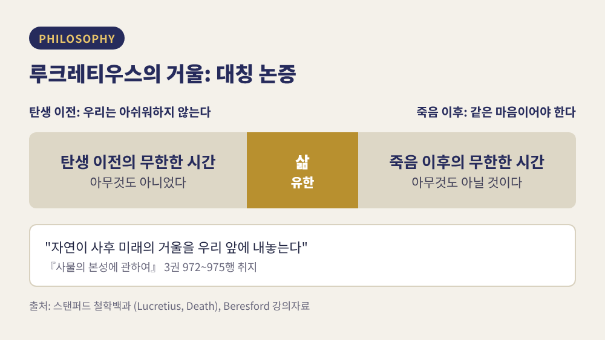
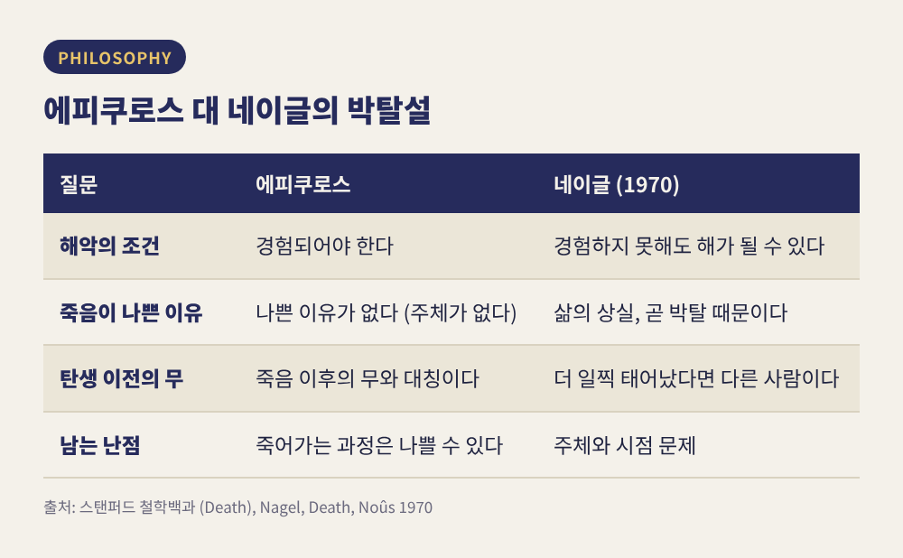

이번 글에서는 에피쿠로스가 말한 "죽음은 우리에게 아무것도 아니다"가 어떤 논리인지 정리해 보려 합니다. 이어서 루크레티우스가 덧붙인 대칭 논증과, 이에 맞선 현대 철학자 네이글의 박탈설을 살펴봅니다.
먼저 결론부터 말씀드리겠습니다.
에피쿠로스는 기원전 341년경에 태어나 270년경에 세상을 떠났습니다. 기원전 307~306년경 아테네로 돌아와 땅을 사들였고, 이곳이 '정원'이라 불린 학교이자 공동체가 되었습니다.
그의 윤리학은 쾌락주의입니다. 다만 흔히 떠올리는 방탕과는 거리가 멉니다. 『메노이케우스에게 보내는 편지』에서 그는 쾌락을 "몸의 고통에서 벗어남, 영혼의 혼란에서 벗어남"으로 풀이합니다. 인터넷 철학백과는 쾌락을 평온으로 이해한 점을 들어 '평온주의자'라는 이름이 덜 오해를 부를 수 있다고까지 설명합니다.
그는 욕구도 세 갈래로 나누었습니다.

이 분류에서 죽음 논증의 동기가 드러납니다. 불멸은 '공허한 욕구'의 대표 격입니다. 마음의 평온이 목표라면, 가장 큰 불안의 원천인 죽음 공포부터 다뤄야 했습니다. 그래서 죽음 논증은 곁가지가 아니라 쾌락주의의 핵심 부품입니다.
편지 124~127절의 핵심 문장은 이렇습니다. "우리가 존재할 때 죽음은 현존하지 않고, 죽음이 현존할 때 우리는 존재하지 않는다." 그는 이어 선과 악은 모두 감각을 통해 경험되는데, 감각은 죽음과 함께 멈춘다고 말합니다.

스탠퍼드 철학백과는 이 논증을 다섯 단계로 재구성합니다.

원자론이 이 논증의 배경입니다. 에피쿠로스에게 영혼도 몸에 퍼진 미세한 원자입니다. 몸이 의식을 지탱하지 못할 만큼 흩어지면 영혼 원자도 흩어져 감각 능력을 잃습니다. 그러니 사후의 심판도, 처벌도 없습니다.
여기서 구분이 하나 필요합니다. 이 논증이 겨냥하는 것은 '죽어 있음'이지 '죽어가는 과정'이 아닙니다. 스탠퍼드 철학백과도 고통스러운 죽음의 과정은 외재적으로 나쁠 수 있다는 점을 약한 고리로 짚습니다. 에피쿠로스는 죽음이 아니라, 죽음이라는 '빈 이름'에 겁먹는 마음을 문제 삼았습니다. 편지의 표현으로는 무한한 시간을 더하는 것이 아니라 불멸에 대한 욕망을 없애야 삶이 즐거워집니다.
이 논증을 삶으로 증명한 일화도 전해집니다. 임종 무렵 이도메네우스에게 보낸 편지에서 그는 극심한 배뇨 통증과 이질에도 이날이 복된 날이라고 적었습니다. 지나간 대화를 기억하는 기쁨이 고통보다 크다는 이유였습니다. 다만 이 편지의 정확한 출전 번호는 제가 확인한 자료에 없어, 디오게네스 라에르티오스가 전하는 편지라는 선에서만 말씀드립니다.
기원전 90년대 중반부터 50년대 중반 사이를 산 루크레티우스는 스승의 논증을 6권짜리 라틴어 서사시 『사물의 본성에 관하여』에 담았습니다. 3권과 6권이 모두 죽음으로 끝날 만큼 이 주제는 시 전체의 무게중심입니다.
3권은 세 덩어리로 짜여 있습니다. 영혼이 물체라는 설명, 영혼이 죽는다는 서른 가지 증명, 그리고 죽음에 대한 두려움을 걷어내는 마지막 부분입니다. 이 마지막 부분이 "죽음은 우리에게 아무것도 아니다"(830행)로 열립니다. 에피쿠로스의 이름은 3권 전체에서 한 번, 1042행에만 나옵니다.
대칭 논증은 단순합니다. 우리는 태어나기 전의 무한한 시간을 전혀 아쉬워하지 않습니다. 그렇다면 죽은 뒤의 무한한 시간도 똑같이 대하는 것이 합리적이라는 겁니다. 루크레티우스는 이렇게 권합니다. 카르타고인들이 사방에서 몰려와 전쟁을 벌이던 시절을 돌아보라, 그때 우리는 아무 고통도 느끼지 않았다. 972~975행에서는 영원한 과거를 돌아보라고 한 뒤, 자연이 "사후 미래의 거울"을 우리 앞에 내놓는다고 말합니다.

이 논증은 힘이 셉니다. 에피쿠로스의 논증이 '경험이 없으니 나쁨도 없다'는 이론적 설명이었다면, 대칭 논증은 '이미 겪어 본 무(無)'를 증거로 내놓기 때문입니다. 한 학자는 이를 두 판본으로 나눕니다. 과거의 무가 아무것도 아니었으니 미래의 무도 그럴 것이라는 판본, 그리고 삶 안에서 돌아볼 때와 내다볼 때를 대칭시키는 판본입니다. 이 학자는 과거 시제를 쓴 원문을 근거로 루크레티우스가 첫 번째 판본을 썼다고 봅니다.
현대에 가장 영향력 있는 반론은 토머스 네이글이 1970년 학술지 『Noûs』에 실은 「Death」입니다. 그의 요지는 이렇습니다. 죽음이 나쁜 이유는 죽어 있는 상태의 어떤 성질 때문이 아니라, 죽음이 우리에게서 빼앗는 것 때문입니다. 문제는 '죽어 있음'이 아니라 '삶의 상실'이라는 겁니다.
네이글은 에피쿠로스의 첫 전제, 곧 해악은 경험되어야 한다는 생각을 흔듭니다. 그의 말로는 인간의 삶에는 몸과 마음의 경계 안에서 벌어지지 않는 일이 많이 포함됩니다. 배신당했는데 끝까지 모르는 사람, 임종 때의 약속이 깨진 사람은 아무것도 느끼지 못해도 해를 입었다고 우리는 판단합니다.
그가 드는 또 다른 사례는 지적인 성인이 유아 수준으로 퇴행하는 경우입니다. 본인은 그 상태에 불만이 없어도 우리는 큰 불행이라 말합니다. 불행은 그가 될 수 있었던 사람과의 대비에서 나옵니다. 반면 만족한 유아는 불행하지 않고, 두더지에게 실명은 불행이 아닙니다. 해당 종의 정상 범위이기 때문입니다.
스탠퍼드 철학백과는 이 흐름을 '비교주의'로 정리합니다. 어떤 사건은 그것이 없었을 때보다 삶 전체를 더 나쁘게 만들 때 해롭습니다. 25세에 죽는 사람의 남은 세월이 좋았을 것이라면 그 죽음은 나쁘고, 괴로웠을 것이라면 오히려 좋은 일입니다. 에피쿠로스와 박탈설의 차이는 결국 이 질문으로 모입니다. 해악에 '체험하는 주체'가 꼭 필요한가.

박탈설에게는 대칭 논증이 가장 날카로운 시험대입니다. 죽음이 빼앗는 것이 문제라면, 늦게 태어나 빼앗긴 시간도 문제 삼아야 하지 않겠습니까.
네이글은 이렇게 답합니다. 훨씬 일찍 태어난 사람은 지금의 그가 아니라 다른 사람이 되었을 것이므로, 탄생은 그에게서 어떤 삶도 빼앗지 않는다는 것입니다. 사후의 시간만 '내가 살 수 있었던 시간'이라는 주장입니다. 이 답에는 출생 시점이 정체성에 본질적이라는 가정이 깔려 있습니다. 스탠퍼드 철학백과는 네이글 자신이 이 가정의 의심스러움을 인정했다고 기록합니다.
이 지점에서 의견이 갈립니다.
다만 브루크너와 피셔의 원논문은 직접 열람하지 못했고, 위 설명은 2차 문헌에 의존했다는 점을 밝혀 둡니다. 스탠퍼드 철학백과는 파핏의 편향에 대해서도 한 가지를 덧붙입니다. 이 편향을 일부러 키우면 죽음에 덜 민감해질 수 있어서, 그런 점에서는 아쉬운 편향이라는 평가입니다.
박탈설이 에피쿠로스를 완전히 이긴 것은 아닙니다. 스탠퍼드 철학백과는 몇 가지 난점을 정리해 둡니다.
시점 문제에 대한 네이글 본인의 태도는 인상적입니다. 그는 죽음을 삶의 어느 지점에 놓기 어렵다고 인정하면서, 그저 "그의 삶이 끝났다"는 사실을 말할 수밖에 없다고 합니다. 위치를 못 정하는 일이 문제가 되지 않아야 한다는 입장입니다.
정리하면 이렇습니다. 에피쿠로스의 논증은 '죽어 있음'에 대해서는 여전히 만만치 않은 논리입니다. 로젠바움이 짚었듯 죽음 공포의 상당 부분은 죽어감과 죽어 있음의 혼동, 내세에 대한 믿음, 몸과 자신을 지나치게 동일시하는 데서 옵니다. 이 혼동을 가려내는 것만으로도 불안은 한결 가벼워집니다.
그러나 박탈설도 만만치 않습니다. 죽음이 두려운 진짜 이유는 어쩌면 죽어 있는 상태가 아니라 아직 하고 싶은 일, 만나고 싶은 사람이 남아 있다는 데 있을지 모릅니다. 에피쿠로스가 겨냥한 평온과 네이글이 짚은 상실은 서로를 지우지 않고, 서로 다른 질문에 답합니다.
어느 쪽이 옳은가에 대한 합의는 아직 없습니다. 대칭 논증을 둘러싼 논쟁이 반세기 넘게 이어지고 있다는 사실이 그 증거입니다.
결국 남는 것은 하나입니다. "죽음이 무엇을 빼앗는지 따져 보면, 삶이 무엇으로 채워져야 하는지가 보인다"는 것입니다. 그 질문 앞에서 에피쿠로스처럼 지나간 대화를 기쁨으로 꼽을 수 있다면, 우리의 정원도 그리 나쁘지 않을 것입니다.
참고한 자료: 스탠퍼드 철학백과(Epicurus, Death, Lucretius), 인터넷 철학백과(Epicurus), 네이글 「Death」(Noûs, 1970), 로젠바움(American Philosophical Quarterly, 1986) 외.